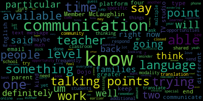
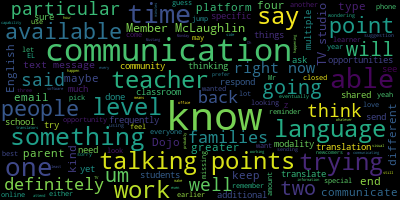

total time: 32.11 minutes
total words: 4744
{kind=link}
total time: 8.81 minutes
total words: 1770
{kind=link}
total time: 2.97 minutes
total words: 471

total time: 12.26 minutes
total words: 1690

[Graham]: participation by members of the public and our parties with the right and or requirement to attend this meeting can be found on the city of Medford website at www.medfordma.org. For this meeting members of the public who wish to listen in or watch the meeting may do so by accessing the meeting link contained herein. No in-person attendance of members of the public will be permitted but every effort will be made to ensure that the public can adequately access the proceedings in real time via technological means. In the event that we are unable to do so despite best efforts, we will post on the city of Medford or Medford Community Media websites an audio or video recording, transcript or other comprehensive record of proceedings as soon as possible after the meeting. The meeting can be viewed through Medford Community Media on Comcast channel 15 and Verizon channel 45 from 5 to 6.30 PM. Since the meeting will be held remotely, participants can log on or call in by using the following link or call in number The Zoom meeting number is 944-5823-5080. You can also dial in on the phone by dialing 301-715-8592 and using meeting code 944-5823-5080. So the objectives for today's meeting, are to discuss stakeholder requirements for improved and seamless communications, outline and review current technical supports and systems used by MPS. This communication strategy work is being developed based on the below approved school committee resolution. Be it resolved that the communications engagement and strategic planning subcommittee begin a district-wide effort to develop a communication strategy roadmap that examines our current communications processes and technology system views. Be it also resolved that the strategy work explores our efforts to reach all audiences, including families and staff within the district, and recommend improvements to increase our success. Be it also resolved that the strategy effort review the MPS website and recommended changes to improve the quality of the content therein. And so today, what we talked about doing today was specifically to focus on some of the technology platforms, and more importantly, the requirements or the opportunities that we see as a collective whole to start to inform having some systemic ways and processes to make sure this communication is able to be pushed out in various methods in a timely fashion. According to the agenda, I think one of the first things we wanted to spend a little bit of time talking about was our district's goals around the communication strategy efforts. And then we'll talk about opportunities and any requirements that various stakeholder groups may have or want to share about communication in general. And then talk a little bit about what we have in place today that is used so that we can figure out what the next steps are to not only understanding where we're at and what we feel like we need, but then, you know, creating a pathway to being able to identify what is missing. And in some cases, I imagine prioritize related spending if that becomes necessary, if there are tools needed that we don't have. So I think the first thing on the agenda, really just to talk about our overall goals around communication. And I do see some members of the public have joined us. So I wanna encourage you guys all to participate as well, but I'll open the floor. What's that? Do you wanna take attendance? Oh, yes. Member McLaughlin. Present. And member Kreatz. And member Graham. So three present and zero absent. Thank you. So I think the first, you know, the first agenda item from my standpoint is more discussion oriented around our goals for communication across the district. And certainly it's hard to talk about goals without talking about opportunities sort of mixed in with those goals. I'm happy for that conversation to flow however it flows. But I didn't know if there was anyone who wanted to start or offer a starting point. And then, Susie, I'm making an assumption that you're taking notes. But if that's not the case, just let me know so I can try to grab them as we go. I am taking notes. OK, perfect.
[McLaughlin]: And do you want me to be time keeper, Jenny? That would be great.
[Graham]: OK, so it's five minutes. All right, so district. So I guess the first agenda item is around goals for our communication strategy effort. And I have heard a number of things voiced certainly in the community over time that talk about the communication strategy in a bigger sense, but as it relates to what our expectations are of the district as a community and what the district's expectations are of being able to communicate with parents and members of the community. So I think that's a good place to start. And I don't know if anyone has anything they want to offer. Melanie?
[McLaughlin]: Yeah, just a point of information. Are you asking what other current district goals around communication?
[Graham]: I wasn't asking that because I think I was making an assumption that we don't have. Stated goals around. Communication, but maybe that is a good place to start. If we do have stated goals around communication, that would be a good place to start. And if not, perhaps that's the conversation we should be having.
[Murphy]: The superintendent was talking to us just before this meeting, but the phone was cutting out. And so I'm not sure if Ms. Galussi or Dr. Cushing know if that connection was reestablished. And if not, I think we can do our best to bridge that gap until Dr. Edward-Vincent is back, but I know she was just in transit, so I think it'll just take a minute or two, but could you, Ms. Graham, could you just repeat that question one more time?
[Graham]: Sure, I think Melanie was asking a question that made me sort of realize I've jumped to a conclusion, which is that we don't have a stated set of goals around communications across the district. And I think to be fair, maybe we do, and people just don't know what they are, but it's, I think it's okay if we don't just yet either.
[Murphy]: So, I think I would be inclined to defer to Dr. Cushing and Ms. Glucy specifically because I know that the committee and the administration were in the development of the formation of a strategic plan over the course of the last year. I know that's something that this, I think it's the subcommittee, but perhaps it was a different one, was engaged in as well. And I think that while that's still in development and draft form, I would imagine that that is an articulation as to the substantive goals. And from a communications perspective, I think every strategic plan is in some respects a communication vehicle because it is informing all constituencies as to where the concentration of the work is and what the focus is. And so to the degree that building awareness and knowledge of those goals so that people understand the identity of the Medford Public Schools and what is being prioritized and probably most importantly, why the impact that that has both on bringing about greater equity and just expanding the opportunities that students enjoy. I don't know that there's a more specific articulation other than this is the substantive educational mission and how do we most effectively inform the community and prospective stakeholders certainly in order to build that awareness. I'm not sure if that's, That's sort of from what I've seen in terms of what has been developed and certainly the work that we're doing. I think the only other thing I would say is that in the moment, every goal is being influenced by COVID-19. And I take your question to sort of extend beyond the particular crisis that we're in. But I think for administrators right now, and probably for educators, for everybody, the pandemic is so all-consuming in terms of how it affects the operations of the organization, we are expending an enormous amount of capital and energy to make sure people are informed, not so much about the breadth of the vision and the educational implications of advancing it, as much as making sure everyone's informed about how school currently operates. And that is frustrating, frankly, because none of us sort of got into this work solely so we could make sure that we hit our the percentage of students and staff tested that we want to for a virus, right? That's not the mission of the organization, but at the moment, it is the work of the organization, because without effectively communicating how our operations are being affected, students, staff, and families are not in a position to really get what they need out of the district. And I think that is, I think it's worth noting that because it's sort of informing how everything at the moment is prioritized, but hopefully, You know, it's certainly not our expectation that that will last in perpetuity.
[Peter Cushing]: And to follow on what Mr. Murphy was saying, under fostering collaborative relationships, the initiative on the draft strategic plan is to engage in timely, thoughtful, two-way, culturally proficient communications with the Medford Mustang community. You know, our early indicators of success are established district marketing communications plan, MARCOM, uh, established district controlled social media accounts, um, deploying a new website, um, and a district smartphone application, um, of which we have not yet received the training I mentioned because of a problem with the trainer. Um, but there is, um, those are the early indicators of success that we are working on, um, with some other action items listed under that, uh, for future work.
[Galusi]: I also think that some of that work also started with some of the task force meetings over the summer. So part of one of the task forces over the summer in the reopening of schools was geared towards specifically communication and working in that effort to keep the community informed of all of our reopening efforts and what we're doing to make sure that the community is safe and that we're reopening our schools and all the work that went into that and some of that work has continued in the fact that we have, you know, made sure that the superintendent sends out her weekly communication on Fridays and that's something that the community now has gotten used to seeing and expecting on Fridays, Wednesdays are the commercial day. So I think there are some goals that maybe started over the summer that have also continued a little bit throughout the year during this COVID time, as Mr. Murphy said.
[Graham]: Yeah, absolutely. And I think some of the things that started in that task force, which I was a part of, you know, there was definitely an acknowledgement that It was too lofty a goal for everyone to be happy with anything we might say over the next year, because that's just like sort of not the current reality. But we talked a lot about the fact that if people were unhappy, it wasn't at the hands of us not communicating what is happening, right? So I may not like what you're saying to me, but it's not that you're saying nothing. So we sort of, I think that task really tried to say like, what is our reality? And like, what are we trying to accomplish here? And we wanna make sure, you know, basic fundamental things are happening. And I think as that program started to roll out, and I think even now, what it did sort of reveal, at least for me is that we, definitely didn't have good systems in place to enable the kind of communicating that we're doing. So, I probably helped like 25 people over the course of the summer who were like, I don't get any emails and I don't know why. And people have tried to fix it and they can't. And so I think there are systemic issues that sort of get in the way of us being able to to simply reach everybody. So I think that's like one consideration when we're talking about having a broader strategic plan is what are those platforms that we're going to use? Who's going to use them? What are they going to be used for? And how do we sort of drive some of that consistency? And then there are a number of folks who have joined us from various PTOs because I think when I think about the various communities, we have certainly our PTOs have a unique perspective on their own school community and how communication flows within their community and the feedback that they get, but they also have like these same challenges of how do they communicate with their community. And you can be, you know, I think it's quite easy to be on one group's mailing list and not on the other. So I get all the emails that my PTO sends, but I get none of the emails that the administration sends, for example, or vice versa. And part of that is because I don't think we have a single way that we push out those communications. They historically have happened in lots of different ways. And I'm just curious, you know, when we talk about opportunity, for me, some of the deficiencies are around like we're spending energy helping individuals troubleshoot their email access. We are not spending that energy actually communicating, right? We're just troubleshooting. So what are the ways that we could investigate or explore the technology that we have available to us to change how we're doing things so that that piece of the process gets a little bit more streamlined and simple so that parents could, you know, in my mind, I would like parents to be able to go to one place and know that if their information is correct in this one place that anybody district wide who's trying to communicate with them can effectively reach them. And I'm not sure that exists just yet. And then when I think about communicating, it's one thing to sort of push out a message, it's another to know that it's being received, and it's another entirely to know that it's being opened, and maybe then you extrapolate that it's been read. And I don't know enough about our system currently to know whether that is something that is even possible in our current technical portfolio.
[Peter Cushing]: So the answer to that question is yes. And so when parents reach out to me or to anyone and say I'm not getting the emails. We can actually see what time they've opened it. We can see, you know, if for whatever reason they're not getting an email, we can see a lot of times the parents have, I think, unwittingly removed themselves from the email distribution list. And we can see that. We can also see if it's being directed to a spam folder or something along those lines to a slightly more limited degree. But one parent emailed me last week. I'm not getting them and our system says, no, you are, and this is the time that it was opened by someone. And so that then gives the parent the opportunity to go in to see what might be happening.
[McLaughlin]: Melanie? Yeah, for a point of information, do we know that, do we have data? I'm assuming we do, but I'm asking, do we have data on, you know, every family that we know that their emails are active? And I guess to Jenny's point, not just that they're being read, Jenny, but I guess to take it a step further, that they're being understood, right? So whether it's language difficulties or, you know, the tone of the email or the way that it's written, I guess, do we know, you know, how do we know they're being read? Like you said, you have the data that they're being read, but again, do we have a list of all the updated emails for whatever the thousands of people that we have? And then, you know, are they actually being understood based on, any response data that we might have.
[Graham]: Dave?
[Murphy]: It's a fluid situation and certainly something that the district has to be vigilant about because email addresses change and we have a sensor and where we're seeing this right now is yesterday we began student testing for COVID-19. And so there's a tremendous amount of uh, data production to make sure that that works smoothly. And, uh, you know, obviously it's only for students for whom a consent form has been, um, submitted. So I'll just very quickly plug that if anyone's listening, encourage friends and family members to send in consent forms, but we have the full list and it's rare to not have operative, um, emails, but like I said, it's fluid. So you have to constantly keep at it. And when there are problems, address it. mostly at the school level, to the deeper question of how do we sort of gauge the effectiveness of the communications and is it really, are people sort of digesting and processing that information? Again, I think that's another thing you have to be vigilant about and constantly, because it's connected entirely to the relationship building between the family and the district and knowing when there are that gaps. In terms of evidence of effectiveness, one thing I would point to is the surveys that have been administered with regard to the reopening had, at least just speaking for myself, I guess, in my view, a tremendous success rate in terms of responsiveness. Now, that doesn't mean it was 100%, and you have to wonder, like, Is it the families who are in most need of effective communication and building stronger relationships vis-a-vis the school and the student that are the ones that are in the smaller percentage for which there is no responsiveness? But even still, this, and granted, every district families were paying close attention during the summer because everybody wanted to know, are we going back? Is it in person? So on and so forth. But even still, for the survey response rates to be as high as they were, in the middle of the summer does speak, I think, to some degree of strength in terms of the bond in which the district relies for communication. That's not to say, like, there isn't need for continuous improvement. I think there definitely is. And I think it's both in terms of perfecting our methods and the mediums that we use and just ensuring strong relationships between families and schools. because that ultimately is what's most important and what I think leads to effective channels of communication is that the relationships are there and are strong. So, but I just would say, I don't think it's ever like, yes, we do that well or no, we don't do it. It just has to be something that has to be continuously improving both from a technical perspective and from a more substantive relationship building perspective.
[Graham]: And when you are looking at those like statistics, open rates, those kinds of things, and you're pushing emails, are they going from school brains or are they going from school messenger? Like I think over the summer, I heard that the two sort of talk to each other, but don't quite. So I was just like, I don't feel like I properly understand the connection between the systems.
[Peter Cushing]: So School Brains is the SIMS information that's the student information management system for the district. Every single school district, whatever it is, if it's Aspen or Redeker or iPass or fill in the blank of any other brand of product that's out there, operates with something like this. That is what's known as a relational database. Generally speaking, these companies offer a communications platform. In my previous experiences with iPass, it was called iAutoAlert. After trying it, we realized that there are certain reasons why companies specialize in these products. The communications piece is a very important one, and generally speaking, should be held by a company like School Messenger or Blackboard or something along those lines, because it's what they do, they're experts on it, And so what these databases do is they talk to each other. And so when a change happens, generally speaking, at some time in the wee hours in the morning, there's an automatic update that happens between the two systems. And so School Messenger will automatically pull from school brains to automatically update all of the information. Now, part of the problem of why some emails or something might be wrong is data entry. And so the issue around data entry is, is when forms come back, you have people entering the forms, checking the forms, doing those types of things. So you may have an issue of human error. One of the things that we are currently working to deploy is, and has been deployed, I should say not working, is right now, parents can go into School Brains across the district and they can update their demographic information. All right, so they can log in you, Jenny Graham, Melanie Goughlin, anyone else who's a parent who has a child in the district. can log into SchoolBrains and you can update your phone number, you can change your email, you can check to see that there's a period where it should be in your email and not a comma or that numbers weren't transposed and you're getting the wrong information. So those are the fundamentally critical pieces of information that now we're taking it, we're hopefully moving away from the forms and having to update those things as frequently as every year and really relying on families to be able to keep track and, you know, to do those things. Now we, on our side, have to accept those changes. It's not an automatic because, you know, sometimes students get the information and put their own email address in there. But there are ways to avoid that, and that's how we do it, by accepting the changes, reviewing them, and school personnel handle that. So the two systems do talk to each other.
[Graham]: And we use, are we using, what is Blackboard do?
[Peter Cushing]: So Blackboard right now is a, is the mobile application that is being used in some schools across the district. We're awaiting a training date on that. The training date that we had was canceled due to an issue with the trainer. And we're just waiting on a training date to get all the principals up to speed on that. And so that allows us to have a mobile application. We're currently halfway through a three year contract. Last year was only deployed in limited schools to test it out. And we're looking to make sure that that is out there across the district.
[Graham]: Okay, so School brains is the piece of technology that elementary school families do not have access to. Is that right?
[Galusi]: So they don't have access the way that middle school and high school does because the teachers don't record their grades within school brains. They use it to do their report cards, but they don't upload grades and assignments in school brains the way that the secondary level does. So parents do have access to go in and edit. So if they've made, if they have a different phone number or things like that, they can edit their personal demographics, but they're not going to be able to see their children's grades the way that the secondary level will.
[Graham]: And do parents know that they could or should be doing that in school brains in the elementary schools?
[Galusi]: No, when it comes to the elementary level, I think that that is something this year that Kim Miles has been working now that she's fully the one that's working with the school brains. She has been working on that with the school brains company so that we can get to the point where elementary families are able to edit their own personal information. As of right now, it's done by the school based secretaries. Got it. And so
[Graham]: it sounds like one of our goals, whether via the pandemic or just in a larger sense is that school brains becomes the place where all district communications come from. I don't think that is what happens in practice always. And certainly when you kind of dive down into the weeds of like how other, how principals, teachers, et cetera, communicate with parents. I know that there are other tools out there that PTOs are using. So I'm just trying to understand, like, are we, is there a concerted effort for us all to be sort of funneling to Schoolbrains? Is that what you're saying?
[Peter Cushing]: So Schoolbrains is not the communication vehicle. Right. School Messenger, Facebook.
[Graham]: But it's the place where you would put your email.
[Peter Cushing]: Right. So Schoolbrains is the secure data management system for all student information in the district. And that's really critical because it contains a host of sensitive private information that should not be out there. It identifies a wealth of information about a student. And so that system communicates with the contact information, the directory data of email, phone numbers, things like parent names, those types of things gets communicated with school messenger, which is then what we push the bulk of our emails, the bulk of our, not the bulk, all of our phone messages come from.
[Galusi]: Right, so if a parent is not, exactly what Dr. Cushing said. So if a parent is not receiving an email or robocall from the district, then the first step needs to be working at the school-based level with the secretary to see why. So if it's that they've changed their phone number, their email, there's a typo. I will say there have been instances in the past where families have maybe knowingly or unknowingly um, you know, marked school emails in like spam or something. And so they directly go there or they're directly removed from their emails. And so there have been a few instances where some of our, um, communication staff here have had to restore, um, so that they will accept again, the school emails. Um, Melanie.
[McLaughlin]: Yeah, thank you. So, Peter, so we didn't get to school brains until middle school, clearly, because the motivation, too, is to check your students' grades, right? So a lot of families won't be motivated necessarily by just going in to change info, but to be able to check the grades is certainly motivating for families, and also to check assignments, what have you. But do I understand correctly that you're saying, Peter, that school brains then converts to school math, not converts, but has a, that's a school messenger, that's the email or no?
[Peter Cushing]: It is an entirely separate product.
[McLaughlin]: Right, and also isn't school, thank you. And also school messenger also has sort of tiers of accessibility, does it not? Like if I'm not mistaken, some school officials, when you talk about sort of the level of private information, some school officials are able to see like IEP data, 504 data, whatever others are not. So it all depends on sort of a need to know, is that right or not right?
[Peter Cushing]: In school brains, yes. School messenger does not have any of that information.
[McLaughlin]: Right, so it's a tiered database system for a management system on a need-to-know basis as well. So it's a little bit more complicated than just a straight database, right?
[Peter Cushing]: Yes, so it's with a multi-level relational database and is extraordinarily complicated.
[Graham]: Okay. Um, but it sounds like, you know, one of our goals is that all families will have access to school brains so that they can maintain their own contact information so that the district can reach them, you know, via whether it's school messenger or blackboard or robocall. But if the data is not in school brains appropriately or correctly, that Family is not going to be communicated with as we push out updates. OK. So I know there are a number of people on the phone who joined us from PTO's and I didn't know if you all had anything you wanted to. Contribute to the discussion as it relates to like you all as a stakeholder group. In terms of communications you receive from the. the district or things you hear about or communication needs that you have that sort of fit into this discussion. So I just wanted to. Sort of ask if you all if any of you I see a bunch of faces had anything you wanted to say Kristen.
[SPEAKER_11]: Hello everybody. I think from a PTO standpoint it would be helpful to us to be able to have some sort of limited access to emails. Right now, our only way to reach people is like, who do you know? Do you have so and so's email? Are you friends with her on Facebook? And, you know, and really just through Facebook, which is maybe not the most effective way to reach the most diverse audience and to make everybody feel included. So it would be helpful if we had some sort of controlled access to emails, not student grades, not anything like that, but that would probably be helpful to us.
[Graham]: Which PTO, Kristen?
[SPEAKER_11]: McGlynn Middle.
[Graham]: I know that at Brooks, they have a system that they use that does sort of the same things that we're talking about, which is called A2Z Connect. And I believe McGlynn Elementary may be using A to Z as well, but I could be wrong about that. Amanda? Hi.
[SPEAKER_09]: I saw your little box lighting up. There's all sorts of other noise going on. I was just going to echo what Kristen said. I think especially at the middle school and the high school level, everything changes when she hit middle school, I think, as far as being able to communicate with other families. It's a whole nother world. You know, I think we've done as good a job as we can at the Brooks using that A to Z directory, but it is super labor intensive. And we just had our school council meeting yesterday and we were talking about, especially in this time of COVID in the, you know, we're not all hanging out on the, playground picking up our kids every day. And so there's a lot of lost connections, especially I think at the younger grades and for any first time parents and first time families. And if there was definitely a way for us to be able to communicate with those families, you know, through just email, I think, you know, we don't need to have all that other information. I don't even feel like we need to necessarily have phone numbers or addresses or anything like that. I think mostly by email, although I do know that, you know, that could limit some contacts for those who maybe don't have continuous, you know, internet connection and whatnot. So that's what I have to say.
[Unidentified]: Thanks, Amanda.
[Graham]: Is that, I mean, I think that is something that recurs and certainly at the elementary level, I think the other driver of wanting some sort of platform among parents at the elementary school level is to establish your network of friends as your kids sort of go progress through the grades and they go from having you know three friends in one class they go to another class and they realize like oh there's more than like three friends that I can have and. Their network start to grow and families are trying to be in contact with each other. Certainly, that is something that I think the brooks Community I think that's why the mcglenn started using it as well, has. appreciated about using A to Z, although it is amazingly labor-intensive for a volunteer organization to maintain that kind of thing. And then I think what inevitably happens, particularly in the elementary level, is it comes up on a kid's birthday or some reason why you want to reach out to the whole class. And it has, at times, I think, been really difficult for parents figure out how to access the right group of families to make sure that if you are intending to include an entire classroom full of children, that you're not relying on your seven-year-old to remember the first and last name of 18 children in your class. So I think at the elementary level, they have this sort of other requirement of how they connect to each other that does change over time and become I guess sort of less important because families make those connections and have ways to sort of get to people that they know when they get to middle school, high school that you don't have when you start out in Medford Public Schools when your children are very young. So I think there, to me, it sounds like there's sort of a need or a requirement for the PTOs to have some level of way to communicate with this same group of people that Medford Public Schools is communicating with. And then I think there are, there's like this other question of families having a need or a want to communicate with others and are there tools out there or does our current tool set allow for those kinds of things to happen that we just haven't enabled or are they not possible? Are there tools out there that do make those things possible that sort of integrate in that way. And I don't know if anyone has any thoughts or suggestions on that.
[SPEAKER_11]: I think what you just said brought up two thoughts from me. One is that in my time going through the Medford public schools, I mean, I've been blessed to have Ms. Galussi as a communicator and Mr. Tucci as a communicator, both of whom are fabulous at it. Not everybody is great at it. Secondly, the method by which a teacher uses to communicate to families changes year to year. I've had teachers use Dojo, Blooms and Remind. So I think it would be beneficial if as a system we decide this is the preferred platform for teachers to communicate to families, because I know for me, when I communicate, I teach first grade, when I communicate to my families, we're asked to use Dojo. So many of the families are already in the system. All I have to do is just click and they're all, I just upload their information from kindergarten. And thirdly, the use of the app this year has been helpful. My daughter's in seventh grade and they must have been asked to put the app on their phones at some point. So a lot of the information goes straight to her. And she'll say to me, did you get that information about X, Y, and Z? And I'm like, yes, like, you know, just one more set of eyes out there sifting through information. So the ability to communicate definitely changes as the students grow. And some of the onus shifts from always just the parent to the child. And that definitely helps kids who maybe don't have parents who speak English or maybe just don't have parents that have the bandwidth to stay in touch all the time. And when the children can do that, we are able, it's just one more point of connection that we can reach. So just something to consider.
[Graham]: Thanks. I'll be out in a minute. Sorry guys. Okay, so I think those, I think those sort of get to like special requirements and stakeholder groups. Are there other things around comments from our various stakeholder groups that we should talk about before we move on to where our technology might be able to intersect with some of these requirements? Lisa? Oh, we can't hear you, Lisa. Can you not unmute?
[Evangelista]: Well, that would be helpful. There you are. No, I'm just saying, I do not have children, but I can see my sister who has twins, and she works full time, and her husband works full time. So if you're all on the computer, what emails do you open? If the kids came home and said, well, we're doing this tomorrow, Mom. she may not open the email, which might have further information about tomorrow because the kids mentioned it. I just think that having worked in the city for so long, we went from people calling you on the phone when they had a question to now they potentially email or sometimes they even text you if they have that capability. But do people check as much as they can in, you know, living, living life. And I think that's, you know, you tend to check when you're looking for a specific thing. But I'm not, I don't know. I mean, I don't know if everybody checks a, their emails daily, do they have the time? Or, you know, is that is it helpful sending emails? Or is it helpful sending the school messenger? You know, like, what, what do people definitely check? I guess would be my question.
[Graham]: And I think the answer is, it depends who you are. Like, and I think that's, you know, I think when you talk about reaching people, talking about preferences makes a huge difference. So, you know, in a full, like if you were looking at sort of a full scale communications operation, you would know that Melanie prefers a text and Kristen prefers an email and Jenny prefers a robocall or, or know, and Kathy wants all three. You know what I mean? Like you would have the ability to say this is how this person wants to be communicated with and then channel those communications to the place where it's going to reach them the fastest.
[Evangelista]: I don't know if our systems have that capability. Like the city's new system because I probably didn't check off anything. And so I get it everywhere in my house, my cell phone, you know, even on my work phone. So. So, yeah, that's what that's what I mean. I mean, there's something like we have to get to that point. Where will people always go? Right. And I think that's as you said, it's very individualized. So I Melanie point.
[McLaughlin]: Yeah, I mean, I really appreciate that, Jenny. I think that's critical. Perfect example, Monday, Burlington School was called off. My daughter's not a district placement in Burlington. The van came and got her. She went up there. We didn't know school was called off. We didn't get them. It was an email that was buried because we're so inundated with emails. There was no robocall. There was no text. And text is the way, like I tell people all the time, if you have to reach me, Text is the way to reach me. I have my phone with me. It pops up I see it might not be able to get back to it right away, but I see it emails I have like four different emails for all different occasions and it just email has gotten to be so overwhelming and I see that with the kids as well like This generation, the students in particular, they are not an email generation. It's almost like trying to call them on the telephone. When I first got a babysitter, and I would call the babysitter all the time, and this babysitter never responds to me. And finally, somebody was like, text them. And I had no sooner sent the text that it would be responded to. And it's the same. Don't email a high school student if you really expect to get an answer from them anytime soon, because it's just not going to happen. I'm sliding more and more into that because it's the immediacy of like all of the demands that we have on us. So I really, you know, agree, Jenny, that, you know, there has to be a choice of what those are. And then when the, and also I think that there has to be a tiered level of communication. So clearly when there's something as important as there is no school, right? Like we have caught, you know, that needs to be like probably every communication channel you have, whether they said they preferred this or not. like, you know, do every blast them from every way that you can. So I think that there's gonna be tiers within that as well, but, you know, God, it would be so great to have a system where we could choose what our preference was and that there was some way to funnel it.
[Peter Cushing]: Peter? So I just wanna respond to what Kristen mentioned about ClassDojo and Remind 101. Those are really great tools. We are signatories to the Student Data Privacy Consortium. And so while I believe that those two are Any tools that we use for communication that access student or family data must fall within these, the parameters established by the Student Data Privacy Consortium. That's first. Second, There is a product out there that would replace School Messenger. It's called Blackboard. It's also, it's the same people behind the application. We were, as a district, it's a better product and it's fiscally a little bit better as well. So we were going to move to that this summer. We put that on hold because of the whole COVID situation, And it's a pretty dramatic change, to be honest. And the last thing that I or anyone else wanted to do was to upset anything with our communications at such a critical time. So the Blackboard platform has a more powerful linkage to Facebook, to text messages, for people to select how they wanna get it, but for us to be able to push, I think in a much more efficient manner, the messages that we need to push. So we'll probably make that shift this coming summer. We'll look at what School Messenger offers as upgrades and things like that, but we'll probably look to make that shift this summer. And it allows us a little bit more flexibility. I also don't see a reason why PTOs working with school principals can't use our broadcast email functionality. to put messages out through school messenger at this time. Like, but that would be a partnership between the principals and the PTO, like when important stuff is coming up or to do certain things along those lines to help support their work. And then it would maintain people's privacy of information because it's not being handed out to a third party. That would be my only concern is Like we hold the information as the agency that it's given to and that authorization piece to give it out. So, but if we're delivering a message, we're not violating what some people might see as that sacred trust of their personal information, even for something as generic as your email or your phone number or things along those lines.
[Graham]: Yeah, and I think the question about the PTOs is that there can be a tremendous amount of activity that falls into the bucket of like not the most important thing a principal needs to do in a day. That is really important to the school community, but it's like the last thing the principal should be spending time pushing out. Like, you know, hey, this fundraiser is about to close and this is your last chance. You know, those are the kinds of things that, you know, I think PTOs would feel bad asking school administrators to participate in in that way, if there was another way for us to preserve the sort of security aspect, but also enable them to be their own agents in that way. And so perhaps as we look at messenger and blackboard there's an opportunity to say are there ways to grant like junior level access to certain folks who can push out emails on behalf of PTOs and things like that. That may be a good way to to try to get at some of this without allowing people access to to data and I think you know one ways one of the ways A to Z does that is you sort of have the option to say what kind of communications that you want. And if you don't want any communications from the PTO, for example, like you just say, I don't, I'm willing to put like my name in there as though my child is in this classroom, but I don't want any communications. And then there's no access to that data based on what the parent has opted in for. It's like, you have to say it's okay, or it's not. So that might be something that Blackboard or even school messenger could do for us if we are able to get to looking at that kind of upgrade this coming summer.
[Edouard-Vincent]: And I just wanted to jump in as well. As I was thinking about the different platforms and what was shared with Dojo and Talking Points and the different platforms that my daughter's teacher, I think it was Dojo last year, this year it's Talking Points where it's like a generic, their cell phone number is kind of kept private, but It's you download this particular app, and then they respond and communicate, and it keeps track of communication. So I know that people have to pick what they feel works for them at that given time, but the point is to try to improve communications. But what I like about the idea of an A to Z is as a parent, I get an incredible amount of communications that come to me. where I'm getting text messages constantly, things that are not maybe relevant to my particular needs, but a lot of text messages, a lot of emails, and trying to sift between that, that it can sometimes become overwhelming. And so right now, in particular, to what Mr. Murphy had said earlier, so much of the communication that is going out right now is specific to how we're handling or things that are going on with the pandemic. So some families will prioritize that communication and then let's say there is an online opportunity for an online raffle or something like that, that they could say, well, I'm not, I don't want to get four reminders about a reminder. So I'm thinking maybe a happy medium would either be to try to ask parents for some type of a release, whether it was an A to Z or something like that, where you were explaining parents have the option to say, I'd like to be told about special events, but not about you know, they could pick and choose the types of communications that they want to receive because it may end up, you know, especially if you have more than one child in multiple schools, it could truly end up being, you know, too much communication and they end up missing to the point that Ms. Member McLaughlin shared, missing one important announcement that school was closed because you have 15 other emails coming in and you're looking at, You look at 14 of the 15 of them, and the 15th one is the one that you missed that you should have read. So I almost feel like trying to find out how much is enough communication? What modality works? Some people communicate frequently in little blurbs, some email, some do lengthier communications. Should it be a newsletter? you know, do people like talking points or dojo or, you know, some kind of classroom communication. And I know for some of our EL teachers, it's slipping my mind right now, but there is a platform that our EL teachers use to communicate with the English learner families. It's the talking points, talking points. yeah so talking points as well i know i couldn't remember if it was that platform but i know it translates and so that's the one that they uh the talking points i guess they um can translate and so you know would that be the one to say to the entire district everyone switch to talking points or if a particular teacher loves dojo and that works for him or her so it's trying to foster and wanting to encourage greater communication at all levels, but at the same time trying to give people the opportunity to be able to use a modality that works best for them. So I just wanted to put that out there as another consideration.
[Graham]: Yeah, I like that a lot. Claire?
[TwQhL72oerA_SPEAKER_12]: Hi, good evening. I wanted to just put in an idea I completely agree superintendent about the overload that could the potential overload that all groups using this all groups associated with the school at different levels all using the same platform. It sounds idyllic in a way that we could all be harmoniously living in the world, digital world, the same one to save data but you're right, it could cause chaos. But it occurs to me that one strategy might be So I have a website for my business. And one of the things that I pay for as part of the business is I get an allotment of free email campaigns. And I had just done that today. And I can see it on this little dial of how much I've used of whatever I have until I have to start paying for it. And it occurred to me that an option for if we're all going to be using the same system might be that the PTOs get three messages a month, or whatever we want to set what it is. And then it's up to the PTOs to be judicious with our communications and to be really mindful about a schedule. And I think that's one of the things that PTOs, well-run and well-managed PTOs can do, can schedule. when we want the news to go out, when we want the reminders to go out, so that we don't overload the system, but that we could still share in a system. So I have no other further ideas of what system to use and how to regulate it, but I just thought it might be an idea of if that's one of the options, I think as a PTO president, I think it would be completely fair and reasonable to say, you can use this platform, but you only get this many communications. So be thoughtful about that.
[Edouard-Vincent]: I love that suggestion of knowing that it's a set amount. But I'm just wondering if we said PTOs have three allotments a month, and some teachers are sending out one or two communications, or maybe an email or a text message, depending which one they're using. what, you know, and what do people prefer to the conversation that was said earlier, when member McLaughlin said she was calling, nobody answers the phone right now, but at the text message, you'll eventually get to it or you'll see it and you'll respond. What modality do the parents prefer? So that, that is something as well.
[TwQhL72oerA_SPEAKER_12]: I think I wonder if in processing what modality people would prefer, I think of an important data piece is the types of information that we're wanting to push out, right? So is this an all-schools, all-children communication? you know, a PTO event that is open to all grades, right, and that that's a larger piece of communication versus a Mrs. Mastoni Columbus classroom thing. It might not be the same system. So I've had a bunch of teachers who've used you know, Blooms, who've used Message Me, I think that's what it was, and that was a very class-specific, and that was a lot of communications, but it was very class-specific, and it became a different pattern of putting that class hat on versus the app, say, the Mustang app, which when I get those alerts, I've already trained myself that that is the district wide or principal sanctioned should pick up a notice. And so in thinking about which ones we're gonna choose, a little bit of a seriousness of the message and the large groupness of the message may help us sort through where we go and what we choose to do and the size of the audience for each message type.
[Graham]: Yeah, and I think having a system that allows some flexibility so that as those types of communications change over time, they are easy enough to change in the system. They're easy for people to change their mind about. I'm always sensitive to systems that require somebody to reach the assistant superintendent in order to make a change to their preferences. Those kinds of things concern me because I think that's where become non systemic and they start to fall apart. So when we talk about what we want the applications to be able to do for us, those would be things. Those would be things that I would want to see us be able to do. I see Kristen has her hand in the air.
[SPEAKER_11]: Hi, sorry to be a pest. I was just thinking though, you know when we're discussing sifting through information, this is maybe. A suggestion, I'm no communications expert by any means, but like for Lisa, when she's releasing her information, I get most of her information through let's say Facebook. If when releasing certain types of information, maybe we use different graphics. a certain set type of graphic that each time I see it, I know it means school committee meeting. That will catch my eye and I'll be able to visually decide if that's something I wanna click on and read more about, or if it's something Columbus specific, or if it's a community event, or if it's something like that, that using a specific graphic might be a way to filter what applies to me. Just a thought, I'll stop now.
[Unidentified]: Alani?
[McLaughlin]: Yeah, I really like the idea of visuals, Kristen, because they're universal and I think that they, you know, I'm a visual learner and I think that they translate, right? We don't have to worry about a lot of that. So I think that's a really great idea. But I also think that consistency across the district is really critical. So this is where I really ran into trouble when the kids started to go, you know, we have three children, so they started to go to different schools and every school had different uh, modalities. And then every teacher within the school had different modalities. And so you're trying to figure out, I was constantly paying catch up on wall, which teacher is actually doing which modality, you know, and that's why it was so critical this year when we were looking at, you know, the pandemic, when we were deciding on remote, what we were using, was it Google classroom, was it zoom, whatever, like that we were, had this consistency across the board because if parents, as we all know, have multiple children, have to figure out the five different modalities, it's just not going to work. So we need consistency. So I think we really need to involve obviously the teachers and the union in this decision for whatever we end up deciding, but they need to have input. I do know earlier when you guys were talking about talking points, we've got a ton of feedback from EL teachers and families that they love talking points. So that's good to know. But I think it would be good to know from staff what are the modalities that they do like and then sort of going from there. But one or two in a very consistent way across the district, I think has to be. the way we go.
[Graham]: Agreed. The other thing that we had on our agenda as a stakeholder group were some of our subgroups of students, particularly our English language learners, but also our families where the parents may not speak English, but the children speak English, or they used to be in our EL program and they've since sort of assimilated into the Gen Ed space, but there may not be complete fluency at home. So I think the other thing or the other concern that I have is about those folks, you know, not showing up to the Zoom call to tell us what they need from communication and whether we're like meeting their requirements or not. And I think that's sort of a conversation we have a lot and often in various ways. I know we talked a lot about it during the task force on communication over the summer, but I did hear, I heard from a teacher recently who was saying like, there's all this communications going out, but there is a population of families who still don't completely know what they've chosen or if they still have a choice or if they can make a change or what, you know, sort of what this, what this means, you know, as, as, you know, the pandemic continues to unfold. So I think for some of our subgroups, I think I worry the most about are they like receiving and able and are being able to engage with the communications that we're sending, even though we are translating, which I think is, a huge step forward in something that only happened sort of sporadically in the past, but now it's happening with some consistency, which is amazing. I don't feel like, I think we have great strategies to know whether we're reaching people in a way that's meaningful so that they are able to engage with the content. And I don't know if there's necessarily a technology component or a fix to that, or not, but I wanted to throw that out there because even though I don't believe there's a tremendous number of people on the phone that can sort of represent that subgroup, I think they are important to make sure we're thinking about.
[Edouard-Vincent]: Member McLaughlin's hand is up, I was gonna jump in. So sorry, let me yield to Member McLaughlin.
[McLaughlin]: Thank you, superintendent. That's very nice of you. I was just going to say, yeah, there's a number of subgroups that are concerning. And so I would agree. And I think we need to, I think that's, you know, almost its own, you know, subcommittee or subset of a subcommittee to think about how we're going into the community, because I don't think necessarily those subgroups are going to come to us. We need to seek them out or find community leaders who will help us seek them out. But I also think to that end, I know that Joan Bowen has been working more also with out-of-district families. So, you know, that's a big component as well. Those, you know, families are, and they have, you know, are entirely entitled to the life of the school for their child. They are still Medford public school students. But also just to that end, like whether or not they in fact have School email addresses. So that was interesting. We just had a bounce back on a school email Joan just FYI And I thought well, that's weird. I don't know if you know, she fell off the roster But so that's a point to consider but also just yeah like and then I think again to that end superintendent our our students who are in foster care, our students who are homeless students, right, those fluid students that are coming in and out, and how we are, especially if we have families that we know are consistently fostering children within the district, that we're really, you know, enabling those relationships and making it easy for them to get different foster children's information changed or whatever. So I think it'd be really, really helpful to have a group, even a very small group that represents, you know, that diversity, you know, the BIPOC diversity and the socioeconomic diversity and the ability diversity. so that those people could tell us what is really helpful for them. And certainly, I think we have different constituents in the community that can help identify some of those community leaders that maybe that can speak to some of those issues.
[Edouard-Vincent]: In responding to what you just shared, Member McLaughlin, I would say that that's like that level of communication, like grassroots, it's like the next level, which I think is something we definitely should be shooting for. I know where our English learner families are, we communicate frequently with Mr. Paul Teixeira for his teachers and staff where a level one and level two students who are newcomers are newcomers. Those teachers are communicating frequently with the families. I was in a classroom on Monday, and if need be, some of the teachers will transition. If they're bilingual, they'll say something again in the other language and have the students respond back and do the reverse translation, which happened on Monday in one of the classrooms that I was in. And so the students at that point in time were able to understand exactly what was being said as they are still acquiring the language. You do definitely need to have those additional steps in place. And so I know we're not there yet, but eventually to be able to have greater translation available or greater visuals available to the suggestion of what type of a communication is it so people kind of know when I see the Mustang here, this is what it means. When I see the Mustang on the left side, this is what it means to come up with some kind of visual image or symbol so that it will help to facilitate and promote greater communication. So I think that that is To remember Graham's point about right now, anything that's going out from central office from my office or from the schools should be going out in the four languages. That is what we are trying to do every time that we're sending communication out. to make sure that that is consistent and everyone knows that that's happening. So there are some details where it wasn't being done as consistently, but to be able to say, okay, we can't have 15 languages, but we're going to at least have these four every single time we send something out. And trying to at least commit to translating it four times. We're not yet at that level where we can have translation available in all of those key languages at this point in time, but trying to create either those opportunities or specific opportunities to target different populations and thinking back to the summer when we did do the roundtables and we had significant community community involvement and participation and we did have the translators available, but even with the translators being available. Some people stated their work schedule, the timing, they couldn't make that particular time. But again, just when those opportunities happen, to continue to say we're going to have this as a possibility or an available resource to you and hopefully be able to have it catch on so that if they can't attend, maybe they'll ask a designee to attend. who will be able to get the information back to the families. So I think we just have to keep working at those types of situations and finding ways to just keep communicating on the multiple levels so that we're reaching, you know, trying our best to reach 100% of the community. Thank you.
[Joan Bowen]: Joan? Yes, I just wanted to piggyback on that a little bit. So for our EL students that are also identified as student with disabilities, we have a conversation with the parents, with an interpreter and how they want to have their documents translated or interpreted for them. And I think that's also important for our EL families to look at how do they want communications provided to them? Do they prefer email? Do they prefer a phone call or a text message or something like that, because we're looking, we're assuming that everyone's going to read an email. And like we said, people have problems with bandwidth, or maybe they don't have access to a computer that easily. But finding out from the families how they want to be communicated with and what method would work best for them. I know that could be a big undertaking, but we found it's really worked well for the special education department that They don't need an interpreter. We could send them a translated document and somebody can read it to them or whatever it may be. But it's just something where we want to talk about how we want to be communicated via email, cell phone. We might want to take that into consideration for our EL families as well.
[Graham]: Yeah, I would like to make sure that when we're looking at what Blackboard or any system can do for us, that it can also help us identify I need translation services and what is that preference? Because I think, like you said, something like that on an individualized level is very labor intensive. And we just frankly, we don't have a communications department that has the bandwidth to do this sort of in that like manual way, but that is where technology can help us start to collect this information start to understand what those requests are so that we can start to meet them. The other question I had, when you're doing video, Dr. Edward-Vinson, are there translations happening on the video?
[Edouard-Vincent]: Oh, you're still on mute. sorry, at the TV studio, they don't have that capability yet at this point in time. It's a specific, I don't know if it's a software or something that works with the TV studio capabilities. So I think closed captioning might be able to happen for some of the TVs, but to be able to translate into the multiple languages is like a special, additional programming or software. So they do not have that capability at the TV studio at this point in time.
[Graham]: So there is an organization called Rev.com and once you have a video you can send it to them and they can subtitle it for you. And so you send it off to them They do the subtitling, and it's very inexpensive. It's like a 24-hour turnaround or something like that. And when I've done it, I think the English subtitles are free, which helps for those who are hearing impaired, or maybe I don't want to listen to a video out loud for some reason or another. I'm on a train or whatever, right? back in regular times when people wrote to train places, but it also allows you to say, I want this translated in Spanish and Arabic, you know, whatever it is, and you send it off, they send back files with those closed captions right in the file so that if you're going to post it, I know if you're going to post it to Facebook, you can post it in a way that it's a video, like one video, and all of those things are implicit in the one video. you just have to post it the right way, but then you could also post them as separate files. I just know every time I've done it, I've been surprised at how affordable it is to translate a video. I mean, typically a relatively short video, but I don't think it would be like a backbreaking budget expense to be able to do that. And that may get some different traction than you're able to get today. That may be something worth looking into as well.
[Edouard-Vincent]: I wouldn't have a problem definitely looking into it. I know that when I do the commercials, I try to keep them very brief working with the TV studio department, but once it's done, even if it's like, you know, two to three minutes, the time for them to upload and, you know, if you mention a website, there are storyboards, there are things that have to be, you know, entered and uploaded. On their side. So normally it's about a two hour turnaround, and that's in English. So I'm wondering. what probably would end up happening is if something was done and if we were using a Rev.com, there would be a delay. It would be, once we get the additional languages, we'd have to send it back to the TV studio so that Patrick Gordon or Cat or anyone else who works with him would be able to, I guess, whatever it is reposted or whatever, yeah. To be able to have it posted when it's playing on a TV channel. And I just don't know if that, would it, I don't know the level of complexity once it's available in English. them to be able to go back like would that be another two hours per language um or is it something that would just be you know a push of a button and it was just two minutes so i'm not i'm not sure but i can definitely you know look into that sure ask um what you know how would that work i will um i will send you the information that i have to pass along um and it may be that um
[Graham]: you know, we can post to social media easily in that format. And it takes a little bit of a lag or something to post it to the TV channel. I don't know. So I can send you the information along with what I have done in the past, just as like a frame of reference. And then if there's a way for us to integrate that, I think that would be really helpful. We are a few minutes from the end of the meeting and one of the things that I think we've talked a little bit about are some of our subgroups and spending some time thinking about those subgroups in particular. And I think Melanie said that could be a meeting unto itself and I tend to agree. We do not have an agenda topic yet for our April meeting. So my thought is that we slot that into our April meeting, which gives us ample time to make sure that we can reach out into the community, figure out how to engage the right folks in that conversation. But I can put that on the agenda for the April meeting, which is the next meeting where we don't yet have a topic because we will run out of time today. And I don't think we have like perfect audience for that conversation. So does that work, Melanie?
[McLaughlin]: Yeah, that's a great idea. What's the date on that, Jenny? April 6th. April 6th. So it would be, yeah. And then I'd love to work with creating a flyer. Again, we could do different languages. Superintendent, maybe you could be mentioning that in some of the commercials, what have you. But I'm assuming you also speak Haitian Creole, is that accurate?
[Edouard-Vincent]: I definitely can speak it. If you were Haitian Creole, you probably would be laughing. Oh, all right. Well, that's different. But am I understandable? Yes. That's good to know.
[McLaughlin]: Yeah, so I mean, I think sometimes it's worth sort of doing, you know, a little bit of that too, just to, you know, I think, you know, thinking about, again, Bowman and Diehl, the symbolic frame, right? Like what, letting people know that you really are reaching out and trying to do this. And I think also just to that end, for member Graham, you know, a few years ago, we were tasked with really, you know, tripling the size. Our goal was to triple the size of the Medford CPAC, specifically with participation around English learners. And we achieved that goal. And a huge, huge part of the way that we did that was just building those one-to-one relationships. So literally having, you know, five of your people tasked with you contact three people and go have coffee with them and meet with them and whatever, you know. And then, you know, they tell two friends, then you ask them, can you meet two people, whatever, that old commercial, we told two friends, two friends, two friends. that we're dating ourselves now, but whatever that was, that BRAC or something. But anyway, so I think that that would be great. I'm all on board with that. Thank you.
[Graham]: So I think just to recap, we sort of talked about a lot of different, I'll say like goals, requirements, et cetera. And it seems like the time is right. And perhaps in these minutes, we can sort of crystallize what they are. so that when we think about a full implementation of Blackboard or any other, whether it's Blackboard or it's not, we know what those requirements are. And so when we're implementing, we can be thoughtful about making sure those requirements can be implemented as we implement versus sort of, you know, what always happens is you implement and then you say, oh, well, we forgot this thing and now it's too hard to go back and fix because we weren't thinking about that architecture at the time. The other thing that we didn't talk about that was on my mind is whether, and it sounds like it might, like a Blackboard-style technology would also integrate and allow us to have a more consistent present, like district-owned presence when we're pushing out to social media. I think a lot of that happens sort of catch-as-catch-can now for lots of reasons, but if Blackboard can start to be the integrator of those kinds of posts, I think that also allows people to start to dial in their social media interests if those posts are all coming from the same place. But I do feel like at times I see posts from all over the place as it relates to my kids going to school that we could consolidate with a tool that can do that for us.
[Peter Cushing]: And so actually, I think that's a good point. I think the other thing too, though, is that we need to really look at consolidating social media accounts. And because here's the thing is we are supposed to be, and we are, but all school districts are supposed to independently archive separate from anything native to say Facebook or Twitter or whatever it may be. we are required to independently archive all of these social media accounts. And so what a lot of districts have done is they've streamlined and only have a few accounts, all right, to keep information centralized, but then you're also limiting the amount that you have to back up or the amount of accounts you have to back up.
[Graham]: And does Blackboard provide or maybe a requirement that sort of coming out is a place to natively store those posts that ultimately push out so that somebody can go in and say, these are the posts I'm going to make. And they're going to go to these various social media platforms on this date. And you sort of set it and forget it. You also have that archival space, that archival place, because it's all in a central application. And you're not natively copying and pasting on Facebook and on Twitter. your Facebook account gets deleted, you still have the platform, it's a CRM platform typically, that sort of comes to mind for me, where you would then have all of that like right in the platform. I don't know if Blackboard has that capability or if some sort of additional platform is needed to handle that social media integration piece.
[Peter Cushing]: So the first part, yes, it can definitely handle that. But I don't know the answer to the archival aspect. So it saves messages to a certain degree, like a certain time span. But as right now, in School Messenger, you have to specifically request to save the message content. Otherwise, it's not saved. Got it.
[Graham]: So there may be a good reason to, as we sort of consolidate our social media presence, have a tool that allows us to do that. I mean, I use one for my organization. It's very inexpensive. I don't even know what we pay for it, but it's probably less than $100 a year or something like that. It's very inexpensive, but it allows us to to proactively say this is what we're going to do on this day, take the time, set it all up, and then it's there forever. So it might be something if Blackboard can't do that, there might be another tool out there that would enable something like that to happen and provide that archival. Does anybody have any other questions or comments? I think we have like one minute left. And I was hoping we would finish early because somebody was taking claim of finishing a meeting early last week, but I'll settle for just on time.
[McLaughlin]: You said we're going to have a competition member Graham from now on. We're all competing to see who can end on time or early. I don't know what the prize is going to be. So don't get your hopes up too much.
[Graham]: Is there anything else before we adjourn? Motion to adjourn. All right, a motion to adjourn by member McLaughlin, seconded by member Kreatz. So roll call, member McLaughlin?
[McLaughlin]: Yes.
[Graham]: Member Kreatz? Yes. Member Graham? Yes. Meeting is adjourned. Great meeting. Thank you, everyone. Bye. Bye.
|
total time: 32.11 minutes total words: 4744 |
total time: 8.81 minutes total words: 1770 |
total time: 2.97 minutes total words: 471 |
total time: 12.26 minutes total words: 1690  |
{kind=link}